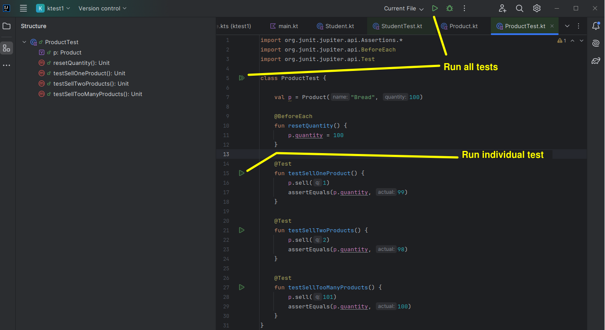

These notes will introduce you to software testing (specifically, unit testing) and how to accomplish it in Kotlin using the JUnit framework. Some of you have done software testing already, but not all of you.
Testing general introduction
Obviously it is important to test software before releasing it, to iron out bugs. Software testing can be done in an informal, ad-hoc way, however the disadvantage of this is that the developer is likely to miss out testing crucial functionality. The robustness of the software can be enhanced by taking a more formal approach to testing, by drawing up a test plan documenting all tests and the expected and actual output, as well as performing a series of unit tests designed to test different parts of the system.
Unit testing
A unit test is designed to test one small part of the system in isolation, such as a method. Unit tests are written to test different outcomes of a method. For example, an Event class (used in the live music venue application) might have a book() method which takes the number of tickets to book as a parameter. This could have three outcomes:
- The event is booked successfully;
- There are insufficient tickets available;
- The number of tickets is invalid, i.e. zero or a negative number.
class Event(var tickets: Int = 100) {
// ... rest of class omitted
fun book (amount: Int): Boolean {
if(tickets < amount || amount <= 0) {
return false
}
tickets -= amount
return true
}
}
Unit tests for this book() method could involve:
- Making a valid booking and checking that true is returned;
- Making a valid booking and checking that the amount is reduced by the expected amount;
- Supplying an invalid amount (0 or less), checking that false is returned;
- Supplying an invalid amount (0 or less), checking that the number of tickets does not change;
- Supplying an amount greater than the number of tickets, and checking that false is returned;
- Supplying an amount greater than the number of tickets and checking that the number of tickets does not change.
JUnit - A Unit Testing Framework
In Kotlin and Java, unit testing is made straightforward by the open-source unit testing framework JUnit. We are using JUnit 5, as this is the latest version.
There is a good tutorial at Vogella which was partly used to research these notes, though it is Java-oriented, not Kotlin.
Setting up a project for JUnit testing in Kotlin
In the Kotlin documentation is a document describing how to setup JUnit tests in Kotlin.
You need to ensure you create a Gradle project. Once you've done this you need to check that the required libraries are in your build.gradle.kts within the dependencies section. If you create a Gradle project, this should be done for you already. Check that your build.gradle.kts contains the following sections, and if not, add them.
dependencies {
testImplementation(kotlin("test"))
}
tasks.test {
useJUnitPlatform()
}
Example
Imagine you have an Event class above.
To use JUnit, we have to create a test class with a series of unit tests. You can create a test class by opening one of your classes and then selecting Code-Generate-Test...
Here is an example of a test class containing a series of unit tests that you would run with JUnit on an Event class:
class EventTest {
// Test that selling one ticket returns true if there are enough tickets
@Test
fun testSellOneTicketSuccess() {
// Arguments of Event: name, number of tickets
val e = Event("Postmodern Doom", 100)
assertTrue( e.book(1) )
}
// Test that selling one ticket reduces the stock appropriately if there are enough tickets
@Test
fun testSellOneTicketReducesStock() {
val e = Event("Postmodern Doom", 100)
e.book(1)
assertEquals( e.getTickets(), 99 )
}
// Test that selling one ticket returns false if there are not enough tickets
@Test
fun testSellOneTicketNoAvailability() {
val e = Event("Postmodern Doom", 0)
assertFalse( e.book(1) )
}
// Test that selling one ticket returns false if the quantity is invalid
@Test
fun testSellOneTicketInvalidQuantity() {
val e = Event("Postmodern Doom", 100)
assertFalse( e.book(-1) )
}
// Test that selling one ticket does not reduce the stock if there are not enough tickets
@Test
fun testSellOneTicketNoAvailabilityDoesNotChangeStock() {
val e = Event("Postmodern Doom", 0)
e.book(1)
assertEquals( e.getTickets(), 0 )
}
// Test that selling one ticket does not change the stock if the quantity is invalid
@Test
fun testSellOneTicketInvalidQuantityDoesNotChangeStock() {
val e = Event("Postmodern Doom", 100)
e.book(-1)
assertEquals( e.getTickets(), 100 )
}
@Test
fun testSellTwoTicketsReducesStock() {
val e = Event("Postmodern Doom", 100)
e.book(2)
assertEquals( e.getTickets(), 98 )
}
}
Looking at this in more detail:
- Note how we have a series of test methods. Note how each is preceded with the annotation @Test. This informs JUnit that the method coming up is a test that it should run. (This is actually Kotlin syntax, not specifically JUnit).
- Note how each method creates an instance of the class under test (
Eventhere), performs an operation on it (e.g. sells it) and tests whether a condition has been met with an assertion. Assertions includeassertTrue()(tests whether a method returns true),assertFalse()(tests whether a method returns false), orassertEquals()(which tests whether a return value is equal to specified value.
Setup and Teardown
We can write special code to perform common operations before each test or before all tests, and corresponding code to perform common operations after each test and all tests. The former is known as setup and the latter is known as teardown.
Why is this useful? It allows us to create a common system containing a number of objects, and objects within objects, which will be used to run all tests starting from the same state. So for example we can setup a shop containing multiple products, and run each test on the shop in this state.
We can use a number of annotations to do this:
@BeforeEach- specifies a method to run before each test.@BeforeAll- specifies a method to run before all tests.@AfterEach- specifies a method to run after each test.@AfterAll- specifies a method to run after all tests.
For example, we could reset the shop's properties (total takings, product list) using a @BeforeEach annotated method:
import org.junit.jupiter.api.Test
import org.junit.jupiter.api.BeforeEach
class ProductTest {
val shop = Shop()
val p1 = Product("1278", "Bread", "Organic Bread Ltd", 0.79)
val p2 = Product("5901", "Cheese", "Griswold Farms Ltd", 1.79)
@BeforeEach
fun setupShop() {
shop.removeAllProducts()
shop.setTakings(0.0)
shop.addProduct(p1)
shop.addProduct(p2)
}
@Test
fun testFindProductById() {
val p = shop.findProductById("1278")
assertEquals(p, p1)
}
...
@BeforeAll
When is @BeforeAll useful? It's useful for expensive operations, which we want to run only once, before all tests are run (as opposed to each individual test). A good example would be connecting to the database. The @BeforeAll method has to be marked as static, indicating that it applies to the test class as a whole, rather than specific instances of it. In Kotlin you do this through the use of a companion object. It also means that that the method need to be declared as @JvmStatic. An example is given below; this also shows the use of @AfterAll to implement a tear-down method to close the connection.
class ProductTest {
companion object {
@BeforeAll
@JvmStatic
fun setupConnection() {
Database.connect("jdbc:sqlite:wadsongs.db", "org.sqlite.JDBC")
}
@AfterAll
@JvmStatic
fun tearDownConnection() {
// In Exposed we don't have to disconnect from the database, but in some
// database APIs you do, and it would go here.
}
}
Parameterised Tests
Often, tests differ only in the parameter we are supplying to the method. You can see this above in the tests within EventTest; most only differ by the amount of tickets we are supplying. Clearly this is rather inefficient. It would be better if we could run a single test with
one or more parameters - and luckily we can, using a TestFactory. A TestFactory creates one test for each item in a list. Here we try to sell -1, 1, 2 and 101 tickets for an event with 100 tickets available. The sell() method should return false, true, true and false respectively. So we can store the test parameter and expected value in a list of Pair objects.
class EventTest {
val event = Event(tickets=100)
@TestFactory
fun testMultipleTicketSalesQuantities() =
listOf(-1 to false, 1 to true, 2 to true, 101 to false)
.map {
dynamicTest("Selling ${it.first} should give ${it.second}") {
event.makeAllTicketsAvailable()
assertEquals(event.sell(it.first), it.second)
}
}
}
Note how we begin the test factory with the annotation @TestFactory and create a list of Pair objects (objects representing a pair of values) where the keys represent the number of tickets to sell, and the values the expected outcome (true or false). We map each Pair object to a DynamicTest (a test which can be generated by input data). The function dynamicTest() creates a DynamicTest object. It takes as arguments a description of the test and a lambda in which we can do the actual test.
The test data in the list of Pair objects covers these cases:
- Selling -1 tickets.
sell()should returnfalseas -1 is an invalid quantity, and not change the remaining tickets (so this remains as 100). - Selling 1 ticket.
sell()should returntrueand leave 99 remaining tickets. - Selling 2 tickets.
sell()should returntrueand leave 98 remaining tickets. - Selling 101 tickets.
sell()should returnfalsedue to attempting to sell one more than the maximum available number of tickets, and as a result not change the remaining tickets (so this remains as 100).
In the lambda we perform the test. We can access the current Pair as it is the it parameter of the lambda provided to map(). The two members of the pair can be retrieved using its first and second properties, i.e it.first and it.second here. So we try to sell the provided number of tickets (the first member of each pair) and check that the return value is equal to the expected result (the second member of each pair).
Further example: the Venue
This is an example of testing a more complex class (the Venue, which contains multiple Events). Not all possible tests are shown. As discussed below, you should test more complex classes, such as Venue, after the simpler classes (such as Event) are fully tested and working. Note how it also shows the use of the assertNotNull and assertNull assertions, which can test whether the return value is not null or null.
import org.junit.jupiter.api.Test
class VenueTest {
@Test
fun testAddEvent() {
val id = 1
val v=Venue()
v.addEvent(Event(id, "Postmodern Doom","1/4/23", 1000))
assertNotNull(v.findEventById(id))
}
@Test
fun testFindOneEventByName() {
val v = Venue()
val id = 1
val name = "Postmodern Doom"
val e = Event(id, name, "1/4/23", 1000)
v.addEvent(e)
val events = v.findEventsByName(name)
assertEquals(events.size, 1)
}
@Test fun testFindTwoEventsByName()
{
val v = Venue()
val id = 1
val name = "Postmodern Doom"
val e = Event(id, name, "1/4/23", 1000)
val e2 = Event(id+1, name, "2/4/23", 1000)
v.addEvent(e)
v.addEvent(e2)
val events = v.findEventsByName(name)
assertEquals(events.size, 2)
}
@Test
fun testFindNonExistentEventByName() {
val v = Venue()
val id = 1
val name = "Postmodern Doom"
val e = Event(id, name, "1/4/23", 1000)
v.addEvent(e)
val events = v.findEventsByName("Metagalactic Hamstaaz")
assertEquals(events.size, 0)
}
@Test
fun testFindNonExistentEventById() {
val v = Venue()
val id = 1
val name = "Postmodern Doom"
val e = Event(id, name, "1/4/23", 1000)
v.addEvent(e)
assertNull(v.findEventById(id+1))
}
}
General strategy for unit testing
You should test each class as you write it. A good strategy is to test the simpler classes, with no dependencies on other classes, first, as then you know that those classes are fully working. For example, you would want to test the Event class and a Booking class before testing the Venue class. After testing the classes with no dependencies, you can then test the larger and more complex classes (e.g. Venue), which use those simpler classes, to see if they work.
You should also ensure you test edge cases. An edge case is a value on the boundary between two outcomes. For example, if a venue has 100 tickets, you might want to test whether 100 tickets can be booked (which should work), and whether 101 tickets can be booked (which should not). Edge cases are common places to find bugs (one example is confusion between < and <=) and ensuring they are included as data in tests means that such bugs are likely to be found.
Exercise
Clone this repository from GitHub:
https://github.com/nwcourses/UniversityForTestingIt contains a modified version of the Week 3 solution. Look at the classes within the project.
Develop a series of unit tests for both the Student class and the University class, and run them. You should include both normal and error conditions in the tests. In the latter case, check that the expected error occurs if you try to pass invalid data into the relevant methods.
The screenshot below shows how to run individual tests, or all tests.

References
Lars Vogel's tutorial on JUnit - Java-oriented, but likely to be useful